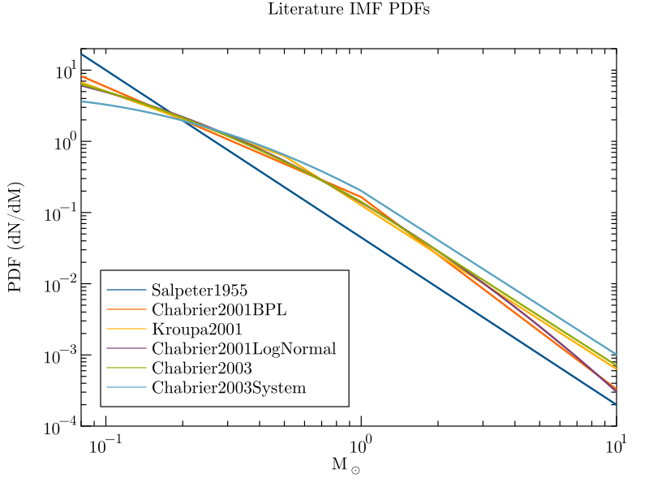

Convenience Constructors for Published IMFs
We provide convenience constructors for published IMFs that can be called without arguments, or with positional arguments to set different minimum and maximum stellar masses. The provided constructors are
InitialMassFunctions.Salpeter1955 — FunctionSalpeter1955(mmin::Real=0.4, mmax::Real=Inf)The IMF model of Salpeter 1955, a PowerLawIMF with α=2.35.
InitialMassFunctions.Chabrier2001BPL — FunctionChabrier2001BPL(mmin::T=0.08, mmax::T=Inf)Function to instantiate a BrokenPowerLaw IMF for single stars with the parameters from the first column of Table 1 in Chabrier 2001.
InitialMassFunctions.Kroupa2001 — FunctionKroupa2001(mmin::Real=0.08, mmax::Real=Inf)Function to instantiate a BrokenPowerLaw IMF for single stars with the parameters from Equation 2 of Kroupa 2001. This is equivalent to the relation given in Kroupa 2002.
InitialMassFunctions.Chabrier2001LogNormal — FunctionChabrier2001LogNormal(mmin::Real=0.08, mmax::Real=Inf)Function to instantiate the Chabrier 2001 lognormal IMF for single stars. Returns an instance of Distributions.Truncated(Distributions.LogNormal). See also Chabrier2003 which has the same lognormal form for masses below one solar mass, but a power law extension at higher masses.
InitialMassFunctions.Chabrier2003 — FunctionChabrier2003(mmin::Real=0.08, mmax::Real=Inf)Function to instantiate the Chabrier 2003 IMF for single stars. This is a lognormal IMF with a power-law extension for masses greater than one solar mass. This IMF is valid for single stars and takes parameters from the "Disk and Young Clusters" column of Table 2 in the above paper. This will return an instance of LogNormalBPL. See also Chabrier2003System which implements the IMF for general stellar systems with multiplicity from this same paper, and Chabrier2001LogNormal which has the same lognormal form as this model but without a high-mass power law extension.
InitialMassFunctions.Chabrier2003System — FunctionChabrier2003System(mmin::Real=0.08, mmax::Real=Inf)Function to instantiate the Chabrier 2003 system IMF. This is a lognormal IMF with a power-law extension for masses greater than one solar mass. This IMF is valid for general star systems with stellar multiplicity (e.g., binaries) and differs from the typical single-star models. Parameters for this distribution are taken from Equation 18 in the above paper. This will return an instance of LogNormalBPL. See also Chabrier2003 for the single star IMF.
Below is a comparison plot of the probability density functions of the literature IMFs we provide, all normalized to integrate to 1 over the initial mass range (0.08, 100.0) solar masses.

We also provide a constructor for a single-power-law IMF,
InitialMassFunctions.PowerLawIMF — FunctionPowerLawIMF(α::Real, mmin::Real, mmax::Real)Descibes a single power-law IMF with probability distribution
\[ \frac{dn(m)}{dm} = A \times m^{-\alpha}\]
truncated such that the probability distribution is 0 below mmin and above mmax. A is a normalization constant such that the distribution integrates to 1 from the minimum valid stellar mass mmin to the maximum valid stellar mass mmax. This is simply Distributions.truncated(Distributions.Pareto(α-1,mmin);upper=mmax). See the documentation for Pareto and truncated.
which internally creates a truncated Pareto distribution. Similarly, we provide a constructor for a single-component LogNormal IMF,
InitialMassFunctions.LogNormalIMF — FunctionLogNormalIMF(μ::Real, σ::Real, mmin::Real, mmax::Real)Describes a lognormal IMF with probability distribution
\[ \frac{dn(m)}{dm} = \frac{A}{x} \, \exp \left[ \frac{ -\left( \log(x) - \mu \right)^2}{2\sigma^2} \right]\]
truncated such that the probability distribution is 0 below mmin and above mmax. A is a normalization constant such that the distribution integrates to 1 from the minimum valid stellar mass mmin to the maximum valid stellar mass mmax. This is simply Distributions.truncated(Distributions.LogNormal(μ,σ);lower=mmin,upper=mmax). See the documentation for LogNormal and truncated.
Arguments
μ; see Distributions.LogNormalσ; see Distributions.LogNormal